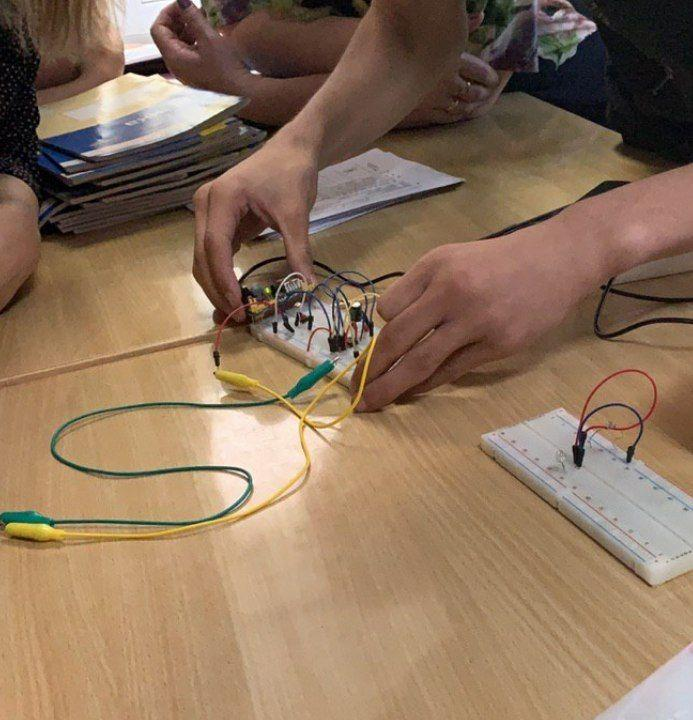

The theremin is an electronic musical instrument controlled without physical contact. The only thing that can shift the outcoming sound's pitch is the distance from the hands to the antenna, which changes the capacitance of the electromagnetic field that, in turn, controls the pitch. That galvanizing concept evoked me to play on this instrument. Since I was fascinated and even slightly confused with its structure, a unique idea flashed across my mind - to build theremin by myself.
In the most common design of theremin, the performer's hand acts as the ground plate of a variable capacitor: the position of the hand changes capacitance. However, I decided to implement another concept. Some of the photoresistors are left after my last experiments with them, so I thought, “What if the position of the hand between the photoresistor and the source of light would control the tone?”
I presented my instrument in my physics class when we were studying electromagnetic oscillations. All of the students in my class got a chance to play on my theremin, and it made my classmates more excited about the real-life applications of oscillations. The presentation was a success: each of my classmates was interested in my explanations and wanted to play on my theremin.
CLICK here to listen to it